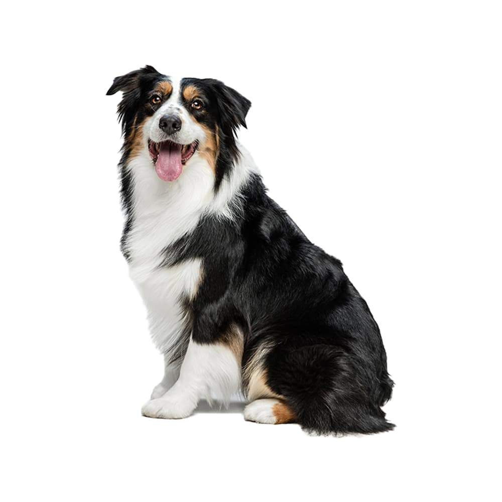
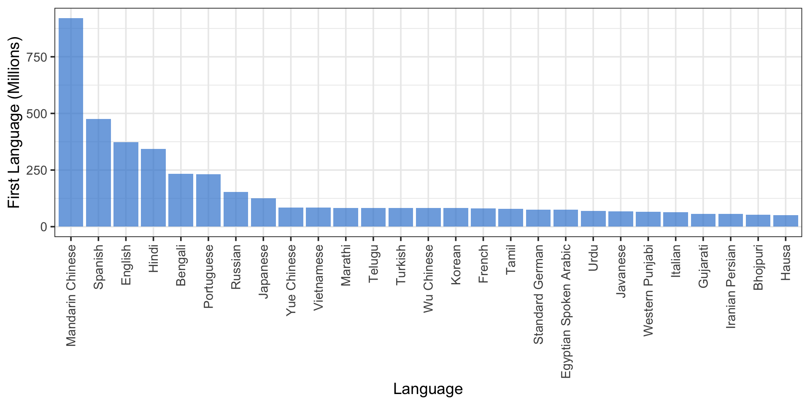

| Speakers (in millions) | |||
|---|---|---|---|
| Language | First Language | Second Language | Total |
| English | 372.9 | 1080.0 | 1452.0 |
| Mandarin Chinese | 929.0 | 198.7 | 1118.0 |
| Hindi | 343.9 | 258.3 | 602.2 |
| Spanish | 474.7 | 73.6 | 548.3 |
| French | 79.9 | 194.2 | 274.1 |
| Modern Standard Arabic | 0.0 | 274.0 | 274.0 |
| Bengali | 233.7 | 39.0 | 272.7 |
| Russian | 154.0 | 104.1 | 258.2 |
| Portuguese | 232.4 | 25.2 | 257.7 |
| Urdu | 70.2 | 161.0 | 231.3 |
| Indonesian | 43.6 | 155.4 | 199.0 |
| Standard German | 75.6 | 59.1 | 134.6 |
| Japanese | 125.3 | 0.1 | 125.4 |
| Nigerian Pidgin | 4.7 | 116.0 | 120.7 |
| Marathi | 83.1 | 16.0 | 99.1 |
| Telugu | 82.7 | 13.0 | 95.7 |
| Turkish | 82.2 | 5.9 | 88.1 |
| Tamil | 78.4 | 8.0 | 86.4 |
| Yue Chinese | 85.2 | 0.4 | 85.6 |
| Vietnamese | 84.6 | 0.7 | 85.3 |
How many languages are there?
Lin 211 • Section 1, Part 4
Kevin B McGowan ![]()
2026-09-02
Due today: How many? (pdf)
What makes humans so special?

- linguistics is the scientific study of language
- language is the human capacity to symbolically represent thoughts, ideas, and feelings
- and to experience those symbolic representations as meaning
- human languages are structured systems for making articulated thoughts fully explicit
- and critically depend on knowing (more or less) what the people around us know or believe, how they’re feeling, and what they might be interested in
- Even the brightest dog can’t do that!
Ling Link
- Please go to ethnologue.com, Click on “Languages” on the left, click on any one of the huge list of languages that come up, and spend ~3 minutes answering the following questions with your neighbor:
- Examine the map. Where is this language spoken?
- Examine the information about population. How many people speak it? Is this a large number or a small number (read the info under “Details”)?
- Examine the category of language vitality. Is this language at a risk of dying (read the info under “Details”)? Is it Stable? Is it Institutional?
- What language family does the language belong to? Had you heard of that family before?
Take a guess
- If you had to guess, how many different ways do you think there are on Earth to say ‘Earth’? or ‘love’ or ‘person’?
- In other words, how many languages do you think there are on Earth?
Attendance Question
- the attendance question is now unlocked on canvas
- it is called: attendance question (lecture day 4)
- the access code is: TARDIS
About 7,170 Languages
- There are roughly 8.3 billion people: 8,319,554,735 on September 1st 2026
- That could mean there are roughly 1,160,328 speakers per language, right? \[ \frac{8,319,554,735}{7,170} = 1,160,328 \]
Top 20 Languages by First Language speakers

Most Spoken Languages on Earth
Most people speak one of these 20 languages
How are there 7,170 languages?
- Most people speak at least two languages
- When a group is divided, the code they share can often become so different that they become less mutually intelligible
- Also, language is constantly changing. The language you speak every day would sound very strange to your great grand parents and might be genuinely difficult to understand for their great grand parents.
- And sometimes we’ll arbitrarily call two mutually intelligible codes separate languages for political reasons, rather than purely linguistic ones
- This kind of splitting and change creates groups of languages that are similar to each other. We call these groups of languages language families
- The branches of linguistics that studies these relationship are called historical linguistics and sociolinguistics
840 Languages
200 Languages
An obvious fact with profound consequences
- The link between linguistic forms and their meanings is arbitrary
- Arbitrary in the sense that linguistic forms only mean what speakers of that language agree that they mean!
- Think of any word…
Language is arbitrary, at every level!
What’s next?
- Come to lecture Wednesday for “Where does language come from?”
- Still finalizing accommodations, other letters, etc.
- If you didn’t do the reading for today or Monday, please do them now!
- And get your textbook if you haven’t already!
- Quiz 2 Friday!

Getting Started